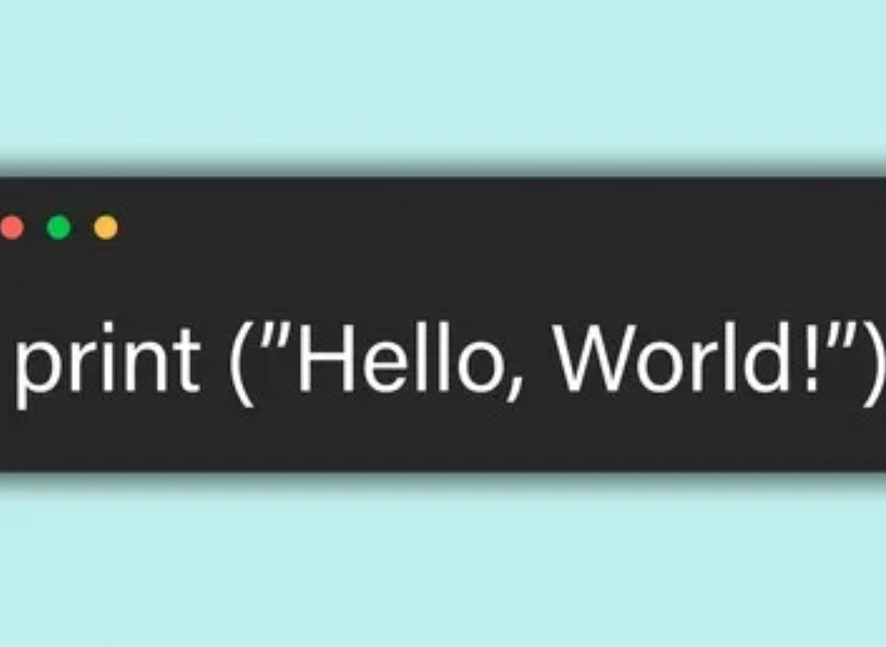
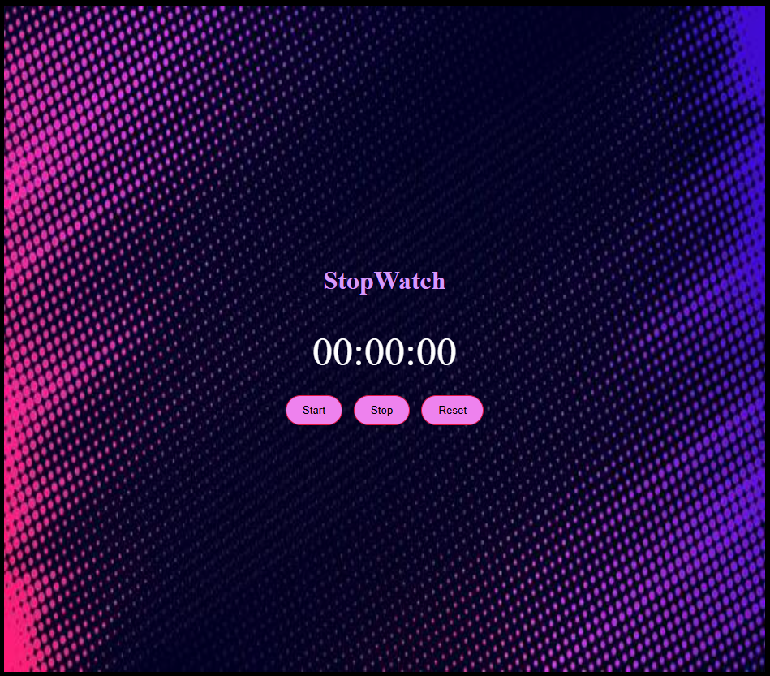
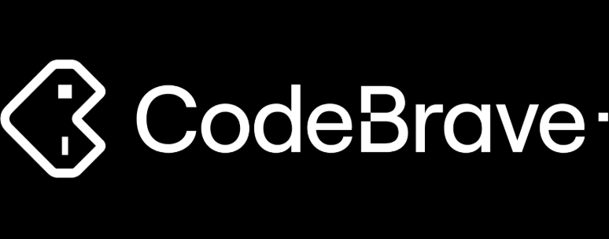

> BAHAA AMER // TIMELINE
ProjectsI have been interested and amused by the concept of coding, ever since 2020 when I randomly saw my brother watching Harvard's "Intro to CS50", and I didn't see hundreds of lines of code, or tough syntax, or unexplainable errors, I saw two connected blocks: "When green flag is pressed : say "Hello World!". And that's how my journey began... From Scratch.
SCRATCH
> SYSTEM_USER // TIMELINE_LOG
- Date: 2020
I learned scratch and made my first interactive block-based programs.
SCRATCH
> SYSTEM_USER // TIMELINE_LOG
- Date: 2021
I finished my first official programming project.

PYTHON
> SYSTEM_USER // TIMELINE_LOG
- Date: 2022
I learned Python basics and explored conditions & loops.
UNITY
> SYSTEM_USER // TIMELINE_LOG
- Date: 2023
I tried using Unity to explore game development logic.

WEB DEV
> SYSTEM_USER // TIMELINE_LOG
- Date: 2024
Expanded into web design and interactive digital projects.
BREAK
> SYSTEM_USER // TIMELINE_LOG
- Date: 2025
I took a break from programming and started pursuing diverse physical activities.

CODEBRAVE
> SYSTEM_USER // TIMELINE_LOG
- Date: 2026
Enrolled in Codebrave web development & Python learning program, building my portfolio.
BAHAA AMER
> SYSTEM_USER // TIMELINE_LOG
- Date: 2027
Working towards university applications, scholarships, and software engineering career goals.